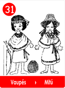
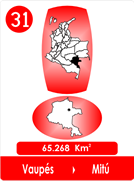
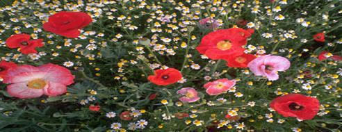

31- “Los Ríos Del Arco Iris -Vaupés
- Consulta a Jesús
- Fábulas de Colombia
- Metodo Corima
- Arbol
- Flor
- Fruto
- Estrellas Pequeñas
- Nostradamus
- La Ruta del Sol
- Fabula de Corima
- Productos y Servicios
- Mensajeros Celestiales
- Juguemos
- Articulos
- Estrellas Humanas
- Herramientas
- Plantas Milagrosas
- Adorables Fechas
- Videos


Dicen que cuando el Creador hizo el Arco Iris, para que no se inundara la tierra cuando el hombre hiciera maldades, el Arco Iris, se encantó con sus colores, pero como su ley es el Respeto, les pidió a los Protectores de la Tierra que le dieran permiso para escoger un lugar para exhibirlos.
Visito muchos lugares, viajó y vió que alguno de sus colores se veían bien y eran comunes en muchas partes.
Pero como el Arco Iris no quería que nadie lo molestara, decidió ir a una Selva bien alejada, donde existieran hartos ríos con mucha agua, para que le sirvieran de espejos de sus colores, eso sí rodeado de flores y muchas plantas.
Entonces un arrendajo amarillo le contó, que había un lugar al Sur de un País Maravilloso, de clima tropical que contaba con muchos ríos, que eran tantos, que hasta tenía el más caudaloso de todos, para que se diera mucho gusto.
Por eso el Arco Iris se resolvió por los Ríos del Vaupés para demostrar todos sus bellos colores y colocarlos de manera especial.
La distribución de sus colores y aplicarlos, le tomó un buen tiempo.

Con el color Rojo fué cauteloso, era la propiedad de los seres vivos, los Hombres, las Mujeres y los Animales y lo veía como señal de peligro, si se abusaba, podía ser fatal !. Por eso lo limitó a flores y frutos.
El Naranja lo colocó en algunos recodos del rió y en los atardeceres para dar un tono mágico.
El Amarillo era más asunto del Sol, por eso y para no molestarlo, lo utilizó en algunas florecitas y en la piel de los animales.
De acuerdo con la Madre Tierra, el Verde decidió extenderlo sobre todo el techo de la selva.
Luego le pidió al Cielo que el Azul del planeta lo hiciera mucho más intenso para enmarcar mejor la Obra.
El Añil lo colocó en las flores más raras y exóticas.
Con el Violeta tuvo especial cuidado escogió a la parasita orquídea, para disfrutar mejor su belleza!

Cuando estaba terminando, se pusieron en fila muchos animales y le pidieron al Arco Iris, que también con ellos podía experimentar sus bellos colores.
Es por eso que dicen, que los guacamayos, estaban en la primera fila y que como estaba tan contento decidid mezclar sus colores y de ahí salieron, micos,
pájaros, osos, jaguares, babillas, peces, tucanes, culebras y flores.